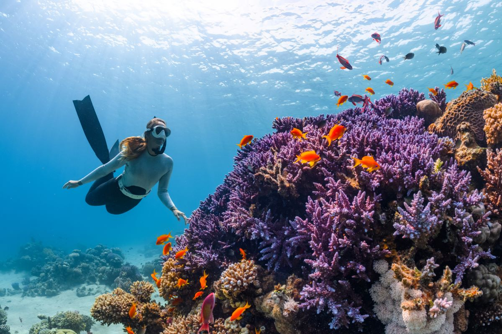

Fishing and Diving
Cast your line into the bountiful depths of our crystal-clear waters and experience the thrill of
fishing like never before. Whether you're an experienced angler or a novice seeking a new
challenge, our fishing tours cater to all skill levels. From trolling for trophy marlins to
battling the acrobatic leaps of sailfish, our experienced guides will take you to the best
fishing hotspots, ensuring a memorable day on the water. Brace yourself for the exhilaration as
you reel in the catch of a lifetime and create stories that will be shared for generations.
Submerge yourself in a vibrant underwater paradise that will leave you in awe. Our diving tours
take you to mesmerizing coral reefs teeming with a kaleidoscope of marine life. Explore hidden
caves and grottos, swim alongside majestic sea turtles, and encounter schools of tropical fish
in their natural habitat. Marvel at the colorful coral gardens that create a dazzling backdrop
for your underwater journey. Whether you're a seasoned diver or a first-timer, our experienced
dive masters will guide you through unforgettable underwater expeditions.
